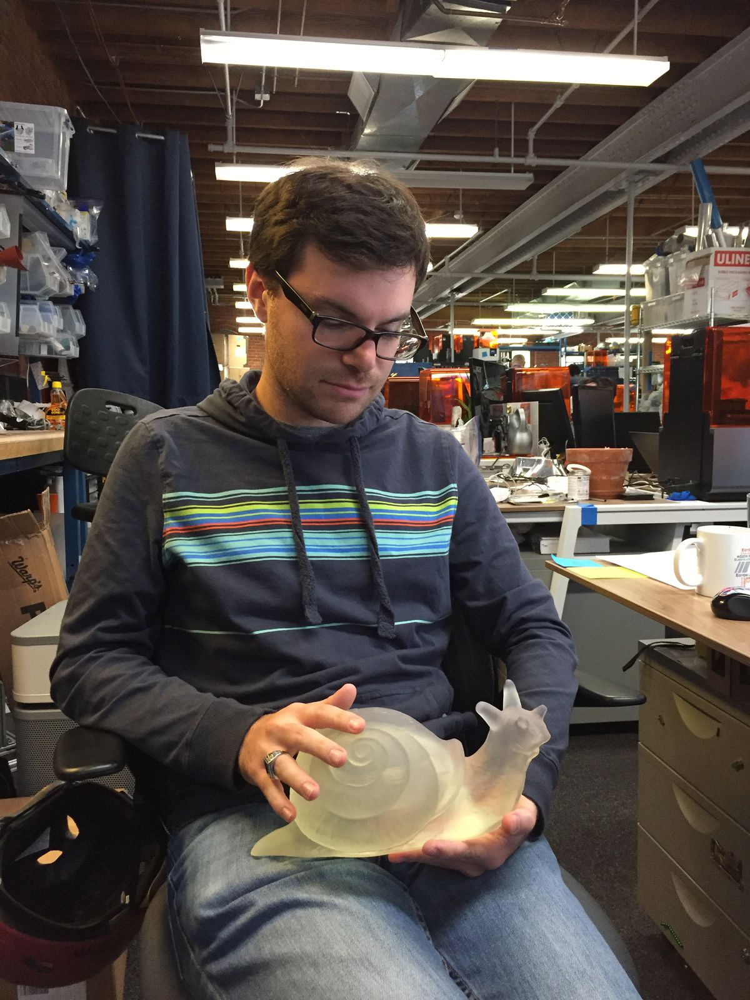
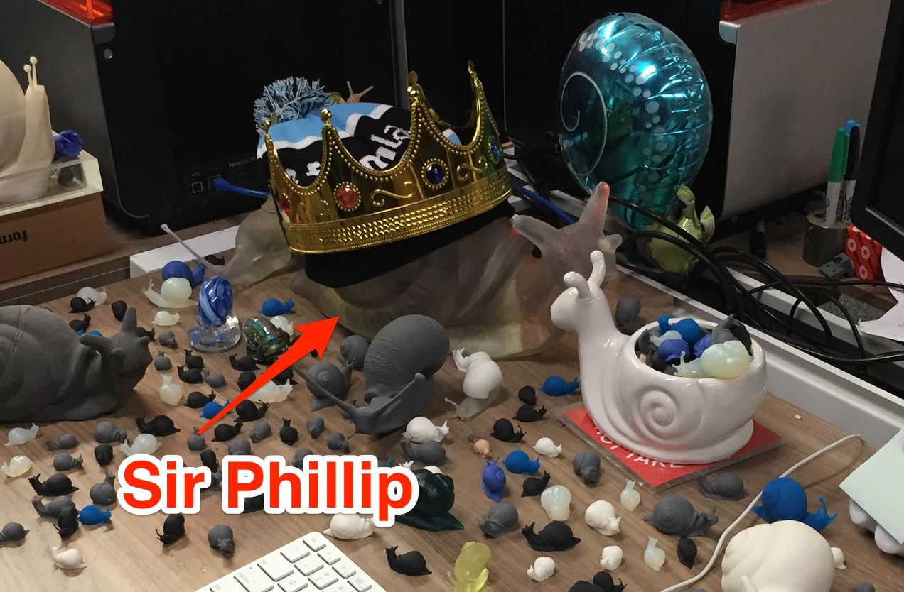

October 23, 2017
I'm so tired right now, but I need to tell you about Lillian.
Lillian is my favorite 3D printed snail. She was hatched on October 23, 2017, weighing about 1kg, on what was then known as Daguerre Senior. It is known known as the Form 3L.
Today was the launch day for the next generation of Formlabs printers. They're a huge step forward in SLA technology—we even trademarked the term LFS (low force stereolithography). For the past few years, I have worked on the Form 3, whose novel printing process enabled the Form 3L.
When almost a year and a half ago I came into work and saw Lillian on my desk, I knew we were working on something special. She is HUGE. About a year later, her big brother Sir Phillip was hatched, roughly twice the weight, showing how much we accomplished in one year's time.
Anyways, I want to write more about the Form 3 and the amazing team that brought it to life over the past year, but I am exhausted and need some rest right now. I also have more to share about LA. Right now, I'm in Solvang, a Danish city about an hour north of Santa Barbara. I'll be without internet for the next two nights (more on that later), so the pace of these posts may slow down until the weekend. Stay tuned.

